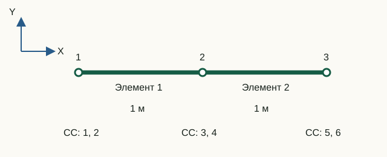

Из локальных осей в глобальную систему
Формулы элемента проще записать вдоль его собственной оси. Но узлы разных элементов должны иметь один общий базис. Матрица преобразования и карта СС решают эти две разные задачи.
Карта степеней свободы — это упорядоченный список глобальных номеров СС элемента. В программе он хранится в element.dofs и показывает, в какие строки и столбцы глобальных матриц нужно добавить каждый коэффициент элементной матрицы. Матрица преобразования меняет базис компонент, а карта СС определяет их адреса в общей системе.
element.dofs заменяет их глобальными адресами общей системы.Направляющие косинусы
Уравнения конечного элемента удобно формировать в его локальной системе координат, где одна из осей направлена вдоль элемента. Перед сборкой локальные векторы и матрицы с помощью матрицы поворота преобразуются в компоненты общей глобальной системы координат модели. На рисунке глобальная система x, y показана чёрным цветом, а локальная система элемента x′, y′ — синим.
Для узлов (x1, y1) и (x2, y2):
L = √(Δx² + Δy²), c = Δx/L, s = Δy/L
Блок поворота одной поступательной пары:
R = [ c s
-s c ]Он переводит глобальные компоненты в локальные: первая строка проецирует перемещение на ось элемента, вторая — на поперечную ось. Для стержня блок повторяется для двух узлов:
T_truss = [ R 0
0 R ]У рамного элемента поворот θz одинаково измеряется в обеих плоских системах, поэтому между поступательными блоками стоят единицы для вращательных СС.
Преобразование перемещений и матриц
Проект использует соглашение:
ulocal = T uglobal
Из равенства потенциальной энергии следует:
Kglobal = TT Klocal T
Так же преобразуется согласованная масса:
Mglobal = TT Mlocal T
Матрица T ортогональна: TTT = I. Поэтому чистый поворот не меняет собственные значения, симметрию и ранг матрицы — меняется лишь представление в координатах.
Карта СС и наложение вкладов
Рассмотрим цепочку из двух ферменных стержней и трёх узлов. Глобальная карта:
dofMap = [1 2; % узел 1: ux, uy
3 4; % узел 2: ux, uy
5 6]; % узел 3: ux, uy
element(1).dofs = [1; 2; 3; 4];
element(2).dofs = [3; 4; 5; 6];Строки 3 и 4 принадлежат общему узлу. Поэтому диагональный блок глобальной матрицы в этом узле равен сумме вкладов обоих элементов. В математической записи для каждого элемента e:
K(de, de) ← K(de, de) + Ke
Здесь de — вектор element.dofs. Тот же закон применяется к массе.
Почему сборка разреженная
Один элемент соединяет только свои узлы, поэтому влияет на небольшое число пар СС. В большой модели подавляющее большинство глобальных коэффициентов нулевые. Хранить полную квадратную матрицу означает расходовать память на нули.
assembleGlobalMatrices сначала создаёт четыре линейных массива:
rows— глобальные номера строк;columns— глобальные номера столбцов;stiffnessValues— коэффициенты жёсткости;massValues— коэффициенты массы.
Для каждой пары локальных индексов записывается триплет «строка, столбец, значение». Затем вызов sparse создаёт глобальную матрицу и автоматически суммирует повторяющиеся пары индексов.
[elementRows, elementColumns] = ndgrid(dofs, dofs);
rows(indices) = elementRows(:);
columns(indices) = elementColumns(:);
stiffnessValues(indices) = element.stiffness(:);
globalK = sparse(rows, columns, stiffnessValues, nDOF, nDOF);Число подготовленных записей растёт как сумма квадратов числа СС элементов, то есть линейно по числу однотипных элементов, а не как квадрат общего числа СС.
Лабораторная 02. Сборка двух стержней в общем узле
Цель — вручную собрать продольный блок жёсткости и увидеть, как два элемента совместно сопротивляются перемещению общего узла.

Исходные данные и обозначения
Координаты X узлов: 0, 1, 2 м; Y = 0. Для обоих элементов A = 0,01 м², E = 200 ГПа, ρ = 7850 кг/м³. Глобальный порядок: [u₁x; u₁y; u₂x; u₂y; u₃x; u₃y].
До запуска: расчёт на бумаге
- Найдите жёсткость k = EA/L одного элемента. Запишите его продольный блок
k·[1 −1; −1 1]. - Составьте блок для трёх перемещений
[u₁x; u₂x; u₃x], сложив вклады элементов в общем узле. Предскажите центральный диагональный коэффициент и связь между узлами 1 и 3. - Найдите общую массу двух стержней.
Запуск в Octave
Выполните из корня проекта. Готовая функция печатает результаты; для этой работы изменять её код не требуется.
addpath(pwd);
setup;
addpath(fullfile(pwd, "reference", "examples"));
r = example_02_sparse_assembly();Работа с результатами
- В
Global DOF map [ux uy]найдите продольные СС 1, 3, 5. ВAssembled sparse Kпрочитайте пересечения этих строк и столбцов и сверьте со своим блоком. - По двум напечатанным матрицам
global stiffness contributionвыпишите слагаемые для K₃₃. Объясните, почему K₁₅ = 0. - Объясните нулевые строки 2, 4, 6: какой вид движения горизонтальные ферменные элементы не сдерживают? По суммам строк продольного блока проверьте, создаёт ли одинаковый перенос всех узлов внутренние силы.
- В
Assembled sparse Mнайдите M₃₃: каждый элемент вносит туда ρAL/3. Выполните приведённую проверку общей переносной массы и сопоставьте с ручным расчётом.
tx = [1; 0; 1; 0; 1; 0];
disp(tx' * r.mass * tx);k = 2·10⁹ Н/м. Продольный блок: k·[1 −1 0; −1 2 −1; 0 −1 1]. K₃₃ = 4·10⁹ Н/м, M₃₃ ≈ 52,3333 кг, общая масса 157 кг. Ненулевые внедиагональные члены массы тоже участвуют в переносном движении.
Что включить в отчёт
Схему, ручной продольный блок, два вклада в K₃₃ и M₃₃, общую массу и объяснение нулевых коэффициентов.
Исходный код главы
createStructuralElement.m— направляющие косинусы, T и поворот матриц;assembleGlobalMatrices.m— индексированная триплетная сборка;tests/test_sparse_assembly.m— проверки разреженности и большой цепочки;example_02_sparse_assembly.m— учебная сборка двух элементов.
SPC: ux, uy, thetaZ
Опоры хранятся как маски fixUx/fixUy/fixThetaZ. Типы 1–4 сохраняют прежний смысл; новые типы: 5 — только ux, 6 — только uy, 7 — только thetaZ. Для фермы тип 7 запрещён, а экспорт использует только типы 1, 3 и 2. При смене семейства маски сохраняются; перед переходом к ферме нужно убрать thetaZ. Повторы диагностируются по узлу и СС.
MPC
Общие ограничения дают разреженное преобразование u = Tq. Ведущие закреплённые СС дают нулевой вклад; цепочки раскрываются в топологическом порядке. Kr = TᵀKT, Mr = TᵀMT, Fr = TᵀF. Матрицы элементов и согласованная масса не меняются. Штрафная жёсткость не используется.